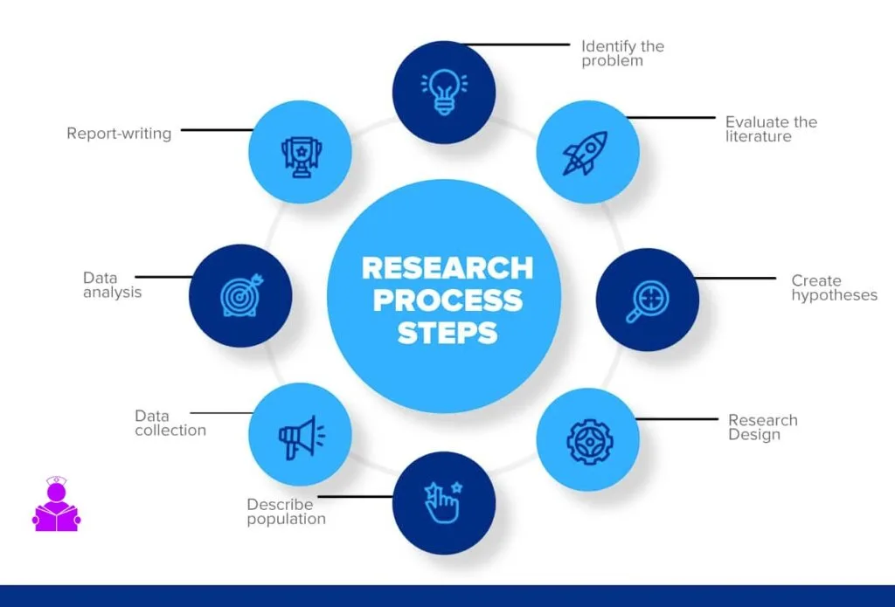

Expanded Nursing Uganda Explanation
Steps & Phases in Research Process should be understood beyond a short definition. Link the concept to patient history, focused assessment, common risks, nursing priorities, documentation and evaluation of outcomes.
01 Overview
- STEP I: Identifying the Research Problem
- STEP II: Reviewing Related Literature
- STEP III: Develop Problem Statement, Objectives, Questions & Hypothesis
- STEP IV: Select Design, Sample & Data Collection Methods
- STEP V: Develop Instruments and Pilot Test
- STEP VI: Data Collection
- STEP VII: Analyze & Interpret Data
- STEP VIII: Generate the Research Report
- STEP IX: Present Findings to Stakeholders
- STEP X: Dissemination of Findings
- STEP XI: Monitoring & Evaluation (M&E)
- Five Research Phases
This is the first step in any research project, before a researcher proceeds with conducting research, s/he must endeavor that the research problem is clearly identified and has a vivid understanding of the research problem at hand.
A research problem in this context may refer to:
- An issue at hand.
- Any form of imbalances
- Technological challenges
- Missing links
- Any unsatisfactory state of affairs
- Unanswered questions.
- An existing gap
- A problem that needs a solution
- A crisis
- An urgent situation / Extremity / Emergency
Those among others are the common ways you can basically classify a research problem.
Most researchers find challenges in identifying a researchable problem and as a result most of the researchers, identify problems which are not researchable. Some researchers are frequently heard asking questions as "where can I find a research problem?" Some researchers have been disappointed by their supervisor(s) and others by proposal defence panels where in most cases a researcher's proposal. Some proposal defense panels have failed to identify a researchable problem in the statement of the problem and forced the researcher to go back and identify a researchable problem.
- Existing related literature mostly the unanswered questions.
- Observation and logical reasoning. This could be Deductive reasoning - General to Specific reasoning
- Inductive reasoning - Specific to General reasoning
- Practical issues.
- Experience. This could be direct experience or indirect experience.
- Existing theories such as the Goldratts Theory of Constraints and the Maslow's hierarchy of needs theory.
- Authority such as a directive from a superior to undertake a given research.
- Current Political, Economic and Social issues such as; High rates of youth unemployment, Inflation rates, Exchange rates, Increase youth migration, Religious issues and Poverty rates to mention but a few
These are the characteristics or attributes of any research problem. They include:
- It must be researchable , implying that a good research problem is one that can be adequately investigated.
- It should be relevant , a good research problem should be significant and connected with the current issues. It should not only be relevant for today but for the future generations as well.
- Theoretical or practical significance.
- Feasibility , implying that a research problem should be one whose effect can be eradicated as a result of research. Therefore it should be accomplishable.
- It should be original in its state , a research problem should be of a new kind or different from other research problems. Therefore it should be novel in nature.
This is the most important step in any research process, reviewing of literature is a continuous process and it helps the researcher to become more grounded about his/her research area. Through reviewing related literature the researcher is able to develop a scholarly language, appreciate the works of other scholars and further conceptualize the research problem at hand. Reviewing of related literature will enable the researcher to identify study variables, theory(ies) to underpin the study and helps the researcher to refine the research problem and topic of the study. However, in a study where the research proposal may contain a section of literature review, then this step becomes very vital since it helps a researcher to compile the literature review section of the research proposal.
At this level the researcher is assumed to have a deeper understanding of the entire research.
Therefore this stage involves "state of the problem" where the researcher clearly states the current problematic situation, this section must show the gravity of the problem and reflect why the research should actually be conducted today and not tomorrow. The statement of the problem must show that the problem is researchable, backed with statistical evidence and its as well a practical problem. The statement of the problem must be concise, brief and specific, therefore it should not exceed ¾ (3 quarters or 0.75) of a page or maximumly 1 page.
This stage further involves the development of the research objectives where the general objective is formulated directly from the research topic and the specific objectives are developed directly from the general objective by relating the independent variable(s) and the dependent variable. However, it's important to note that a researcher will only identify good and researchable variables only and only if s/he has sufficiently reviewed the related literature.
Research Questions are further developed from the specific objectives implying that the number of specific objectives will always determine the number of research questions in a case where we have 3 objectives, there will be 3 questions if the specific objectives are 5 in number then the questions will equally be 5 in number". In this case research question(s) refer to the question(s) that the researcher intends to answer through specifically undertaking a study.
Research Hypothesis; these are the tentative answers to the research questions above. At this point the researcher develops research hypotheses, it's important to note that unlike the research questions, research hypothesis may not necessarily be of the same number as the research questions, the hypotheses may even be less or more than the research questions.
At this stage, the researcher is expected to select the overall plan of the research or roadmap. Therefore at this point the researcher will select the most appropriate research design and the selection of the research design will be based research strategy or approach, that is to say whether it's a purely quantitative study, qualitative study or a triangulation (mixed method).
- The quantitative research designs include; Experimental Design, Survey Design & Correlation Research Design among others.
- The qualitative research designs include; Ex-Post Facto design, Ethnography design and Historical design among others.
- Research design for mixed methods includes; The Longitudinal design, Cross-sectional design and Cross-cultural research design among others.
This stage as well involves the selection of the most appropriate sample design to use in the study. Selection of the sample design depends greatly on the research strategy either qualitative research strategy, quantitative research strategy or mixed research strategy. Therefore the three forms of sample designs include;
- Quantitative / Probability / Random-sampling design
- Qualitative/ Probability / Non-Random sampling design
- Mixed Sample Design.
- Quantitative / Probability Sampling Design: This is adopted when the research strategy is quantitative in nature and under this strategy the researcher will adopt sampling techniques such as; Simple Random Sampling (SRS), Stratified Sampling, Cluster Sampling, Systematic Sampling & Probability Proportionate to Size Sampling and Multi-stage Sampling.
- Qualitative / Non-Probability Sampling Design: This is adopted when the research strategy is qualitative in nature and under this strategy the researcher will adopt sampling techniques such as; Judgmental sampling, Convenience sampling, Quota sampling, Snowball/ Chain Referral Sampling and Accidental Sampling among others.
- Mixed Sampling Design: this is where the researcher adopts both the quantitative and qualitative sample designs and this is usually adopted where the research strategy is mixed research strategy (a combination of both qualitative and quantitative strategies).
This step as well involves the selection of the most appropriate data collection methods, these methods will depend on the research strategy or approach, the research design and sample design that was adopted. There are three (3) main classifications of data collection methods these include;
- Quantitative data collection methods.
- Qualitative data collection methods
- Mixed data collection methods.
- Quantitative data collection methods: these are methods that are used to collect data which is numeric, figures or counts in nature. These data collection methods include; Questionnaire survey & experiment among others.
- Qualitative data collection methods: these are methods that are used to collect data which is in form of words, statements, themes and descriptive in nature. These data collection methods include; Focus Group Discussions, Documentary Review, Observation and as well as Key Informant Interviews.
- Mixed data collection methods: these include a triangulation of both qualitative and quantitative data collection methods in a given study.
This step is guided by the previous step, at this level the researcher starts by developing the data collection instruments, these instruments are classified into 3 broad categories which include;
- Quantitative data collection instruments.
- Qualitative data collection instruments.
- Mixed data collection instruments.
The choice of the data collection instrument greatly depends on the data collection method(s) that was adopted.
- Quantitative data collection instruments: include; Questionnaire/ Survey Guide and Experiment Checklist among others.
- Qualitative data collection instruments: include Focus Discussion Topics / Focus Group Discussion Guide, Documentary Review Checklist, Observation Checklist and as well as Key Informant Interview Guides.
- Mixed data collection instruments: this includes the adoption of both qualitative and qualitative data collection instruments. This is adopted in a study whose research design adopts both qualitative and quantitative research designs.
This step as well involves the pre-testing of the selected instruments for both validity and reliability.
- Validity in this context refers to the correctness of a research instrument or it can be understood as how well a research instrument measures what it is supposed to actually measure. The common method of measuring of validity is usually the Content Validity Index given by number of items declared valid divided by total number of items. Amin, (2005) recommends that CVI should be above 0.7 for the instrument to be considered. However, I recommend that for the sake of more valid result this value should be at least 0.8 for social research if the instrument is to be rendered valid.
- Reliability or consistence of an instrument; this measures how consistent a given research instrument is, usually by examining the level of consistence of results produced by the instrument over time. It is usually measured using the cronbanch's alpha coefficient, this value is produced by statistical software. Amin (2005) recommends that the coefficient value should be more than 0.7 for an instrument used in social research. However, for the sake of more reliable results, I recommend that this value should be at least 0.8.
After pre-testing for validity and reliability of the research instruments (quality control). The researcher then embarks on data collection, at this point the researcher collects;
- (i) Primary data - this is data that is directly collected by the researcher from a respondent. The researcher uses research instruments that have been tested for both validity and reliability.
- (ii) Secondary data - this is data collected by a researcher from secondary sources of data such as text books, journals, recordings, newspapers & magazines among others.
- In a single study a researcher can collect both primary and secondary data depending on the objectives of the study and interests of the researcher.
- The researcher may decide to employ research assistants to help him/her in the process of data collection. Research assistants must be well trained before any research project in order to ensure that the research is ethical and its findings can actually be generalized.
After collecting data, the researcher then thinks of presenting, analyzing and interpreting the data. It's important to note that quantitative data will be treated differently from qualitative data.
- Quantitative data analysis techniques include: Uses of Correlations, Regression Analysis, Analysis of variance (ANOVA) and as well as Chi-square tests among others.
- Qualitative data analysis methods include: Content Analysis & Thematic Analysis among other methods.
Before data analysis a researcher must do data management which includes; cleaning of data, coding of data & capturing of data usually into statistical software.
After presentation, Analysis and Interpretation of data, the researcher then compiles the research report. The format of a research report varies from Institution to Institution or Organization to Organization, therefore it's imperative that a researcher vividly understands the format of the research report of his or her organization. However, it's important to note that generally a research report will include; the summary of the findings, dissension of findings, conclusion of the study and as well as the recommendations of the study. Therefore ensure that you are conversant with the required format of a research report.
After compiling the report, you should then present your findings to the concerned stakeholders. The researcher should organize a PowerPoint slide preferably with about 8-12 slides depending on the length of the report, purpose of the report and the target audience. Then present the findings to the concerned stakeholders.
- A slide with the topic of the research, author of the report (Researcher) month/year (Date)
- A slide with a summary of the abstract.
- A slide with the study objectives.
- A slide with the conceptual framework.
- A slide with the significance and justification of the study.
- A slide with the summary of literature review.
- A slide with the methodology.
- A slide with the findings of the study.
- A slide with the recommendations.
- A slide to thank the audience.
These should range from 8-12 slides and depending the length of the report, purpose, audience and complexity of the subject matter, the report should be presented between 10 and 30 minutes. However, these are not standards all these guidelines may as well vary from Institution to Institution.
If it's an academic research then once it's approved, endeavor to disseminate the research findings to all the concerned stakeholders. These stakeholders may include;
- The academic institution (Usually 2 copies),
- Your research supervisor(s) (Usually 1 copy per supervisor),
- The case you studied for example "A case of Uganda Revenue Authority" (Usually 1 copy) and
- All other concerned stakeholders that you could have highlighted in the document as some of the potential beneficiaries of your research, including you the researcher. Don't give out everything and remain with totally nothing.
You can disseminate your findings in soft copy or hard copy. You can disseminate in form of a standard /report or an article in a peer reviewed Journal or in form of a conference presentation among other forms. Use a form that the target beneficiaries can easily access.
After dissemination of findings, any focused researcher should monitor whether his/her findings made a contribution towards solving the existing problem, whether his or her findings influence policy making, decision making and whether they are appreciated by the target beneficiaries.
The researcher should as well evaluate whether his/her findings were Relevant, whether they were Efficient, Effective, Impactful and whether his/her recommendations provided Sustainable solutions to the existing problems.
Conducting of M&E is not part of the mainstream research process but it helps in making a researcher better and much better through identification of mistakes and learning hence improvement in any subsequent research project(s).
- Phase Activities
- Phase 1: Conceptual Work Identifying research problem/questions Reviewing relevant literature Developing theoretical framework & conceptual Generating logical hypotheses
- Phase 2: Study Design & Planning Research design & methods Identifying population & accessible sample Selecting measures Establishing study protocol
- Phase 3: Research Implementation Data collection Intervention if applicable
- Phase 4: Analysis Data screening & cleaning Data analysis Interpretation and writing up of findings
- Phase 5: Dissemination Communication of findings
02 Nursing Uganda Clinical Lens
Use Steps in Research Process as a practical nursing topic, not only a memorized definition. Translate theory into safe decisions, accountability, communication and service improvement.
- What to understand first: define steps in research process, identify the normal or expected pattern, then explain what changes when the patient is unwell.
- Why it matters in care: the nurse must recognize risk early, explain findings clearly, document accurately and know when to escalate.
- How to revise it: connect each point to assessment, nursing diagnosis or care problem, intervention, rationale and evaluation.
03 Assessment Guide
- The problem, stakeholders, available resources, policy requirements and ethical issues.
- Risks to patients, staff, confidentiality, quality, costs and continuity.
- Documentation, reporting lines, supervision and evaluation measures.
04 Nursing Priorities, Rationales and Outcomes
- Use evidence, policy and professional standards to guide action.
- Communicate clearly, document decisions and protect confidentiality.
- Evaluate whether the action improves safety, learning or service delivery.
The rationale for these priorities is patient safety: nursing actions should prevent deterioration, reduce discomfort, support recovery and create clear evidence for the next caregiver.
- Expected outcome: The plan is documented, realistic, ethical and improves patient care or learning outcomes.
05 Patient Teaching and Revision Check
- Explain steps in research process in simple language the patient or caregiver can repeat back.
- Teach warning signs, medicine or follow-up instructions, hygiene or lifestyle points where relevant.
- For exams, prepare a short answer using: definition, causes or risk factors, signs, assessment, management, complications and prevention.
- For ward practice, document baseline findings, actions taken, patient response and the plan for review.
Illustrations and Diagrams (11)



3 more diagrams available, open the lesson for full illustrations.
Related Video Lectures
Watch nursing lecture videos on YouTube for this topic. Opens in a new tab.
Watch on YouTubeExternal link: YouTube may use its own cookies and terms. Nursing Uganda is not affiliated with YouTube.